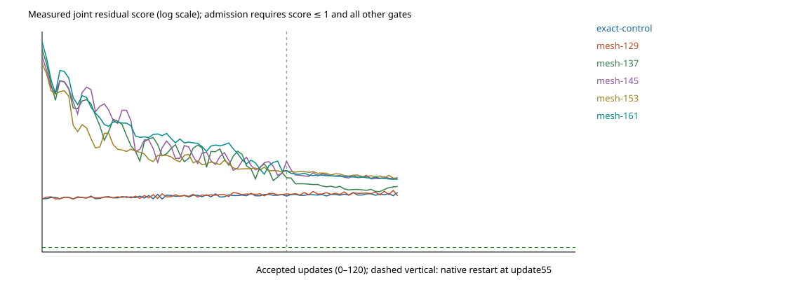
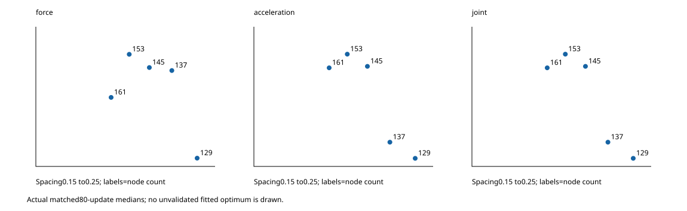

Status: complete_pending_review. Source iteration545; box30.72; shift0.25. Optimizer updates are not physical time. Curve predictions grant no admission. Existing references remain unchanged.
Full record · Q2–Q32 ledger · Curve validation · Measured updates
Charged optimizer attempts: 480/720. Resource/metadata deferrals: [{'case': 'mesh-177', 'reason': 'resource_geometry_deferred', 'admission': {'nodes': 177, 'backend': 'cuda', 'estimated_host_gib': 3.5986404046416283, 'host_available_gib': 10.56405258178711, 'passed': False, 'scope': 'Conservative admission estimate; actual component timing and memory telemetry remain required', 'estimated_gpu_gib': 6.180840741842985, 'free_gpu_gib': 6.710693359375}}, {'case': 'mesh-193', 'reason': 'resource_geometry_deferred', 'admission': {'nodes': 193, 'backend': 'cuda', 'estimated_host_gib': 4.517198644578457, 'host_available_gib': 10.564067840576172, 'passed': False, 'scope': 'Conservative admission estimate; actual component timing and memory telemetry remain required', 'estimated_gpu_gib': 7.864864181727171, 'free_gpu_gib': 6.710693359375}}]

| Case | Spacing | Accepted | Final force | Final acceleration | All gates |
|---|---|---|---|---|---|
| exact-control | 0.24 | 80 | 0.0009409375552493996 | 0.015381797671036987 | False |
| mesh-129 | 0.24 | 80 | 0.0012485371363914056 | 0.012992549826102923 | False |
| mesh-137 | 0.22588235294117645 | 80 | 0.0020678109715240936 | 0.017595687415548466 | False |
| mesh-145 | 0.21333333333333332 | 80 | 0.001431456139800727 | 0.0322273513443715 | False |
| mesh-153 | 0.20210526315789473 | 80 | 0.002133677297325232 | 0.029633824385535343 | False |
| mesh-161 | 0.192 | 80 | 0.0020936821562478774 | 0.02984219115212272 | False |

| Q | Catalogued | Replayed | Deferred | Readiness passes |
|---|---|---|---|---|
| 2 | 33 | 5 | 28 | 3 |
| 3 | 30 | 7 | 23 | 6 |
| 4 | 9 | 9 | 0 | 0 |
| 5 | 13 | 9 | 4 | 0 |
| 6 | 9 | 5 | 4 | 0 |
| 7 | 5 | 5 | 0 | 0 |
| 8 | 11 | 7 | 4 | 0 |
| 9 | 8 | 5 | 3 | 0 |
| 10 | 7 | 7 | 0 | 0 |
| 11 | 4 | 4 | 0 | 0 |
| 12 | 2 | 2 | 0 | 0 |
| 13 | 6 | 6 | 0 | 0 |
| 14 | 2 | 2 | 0 | 0 |
| 15 | 2 | 2 | 0 | 0 |
| 16 | 2 | 2 | 0 | 0 |
| 17 | 3 | 2 | 1 | 0 |
| 18 | 3 | 3 | 0 | 0 |
| 19 | 3 | 2 | 1 | 0 |
| 20 | 2 | 2 | 0 | 0 |
| 21 | 8 | 5 | 3 | 0 |
| 22 | 5 | 5 | 0 | 0 |
| 23 | 2 | 2 | 0 | 0 |
| 24 | 3 | 3 | 0 | 0 |
| 25 | 2 | 2 | 0 | 0 |
| 26 | 2 | 2 | 0 | 0 |
| 27 | 2 | 2 | 0 | 0 |
| 28 | 2 | 2 | 0 | 0 |
| 29 | 2 | 2 | 0 | 0 |
| 30 | 4 | 4 | 0 | 0 |
| 31 | 1 | 1 | 0 | 0 |
| 32 | 2 | 2 | 0 | 0 |
The finite endpoint catalogue does not enumerate every possible seed or knot. Historical cell-native successes are not overwritten by D4 replay. Failed preparation is not a rejection of a charge. Interpolated fields and fixed-horizon relaxed fields are not a stationary convergence proof. Full float64 fields remain local.